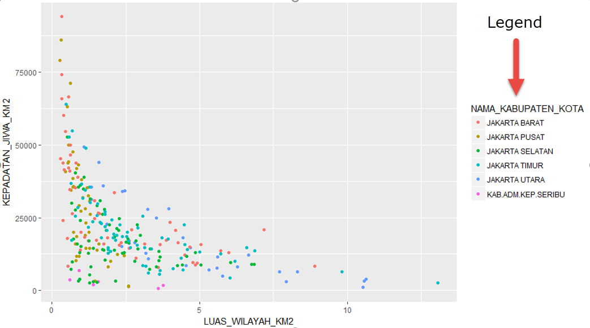
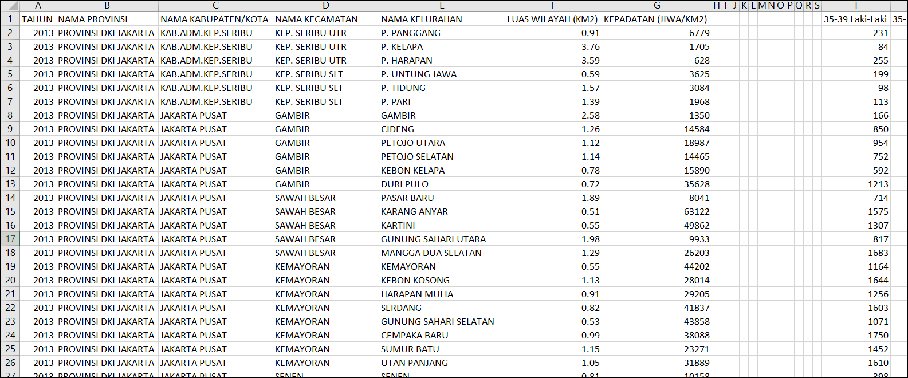

#Ketik nilai NA
NA[1] NA#Tampilkan type dari NA dengan function typeof
typeof(NA)[1] "logical"Data preparation atau data wrangling adalah proses yang memakan waktu dan tenaga paling besar bagi seorang data analyst/scientist, yaitu sampai 80 persen. Detailnya, pembacaan sumber data memakan waktu sampai 20 persen, dan mengorganisasikan dan membersihkan data memakan waktu sampai 60 persen.

Dengan demikian, keterampilan untuk melakukan data preparation atau saat ini sering disebut sebagai data wrangling adalah mutlak untuk seluruh data scientist maupun data analyst.
Lalu apa saja yang dilakukan di proses ini?
Data wrangling adalah proses membaca data dari berbagai sumber dan mengubah isi dan struktur sehingga dapat digunakan untuk analisa.
Data cleansing biasanya melibatkan isi yang perlu diubah karena kadang data dimasukkan dari sistem yang berbeda. Bertolak belakang dengan anggapan bahwa dengan sistem, data akan bersih dan standar. Pada kenyataannya, bisnis berkembang lebih cepat dibandingkan dengan pembuatan sistem sehingga banyak design diubah di tengah jalan untuk mengakomodir hal ini, dan isi menjadi “berantakan”. Penyebab utama lainnya tentunya adalah sistem entri data yang manual.
Contoh yang paling sering adalah informasi pelanggan (customer). Di satu sistem namanya boleh memasukkan gelar, dan di satu sistem tidak boleh… jadinya ada dua nama yang serupa tapi tak sama sebagai berikut: "Agus Cahyono S.Kom." dan "Cahyono, Agus".
Dalam perjalanannya sebagai data analyst R, pasti akan menghadapi kolom dengan sebagian data tidak terisi atau kosong. Ini disebut dengan missing value atau nilai yang hilang.
Menyadari hal ini adalah satu tahap penting karena kita akan sadar bahwa hal tersebut adalah lumrah terjadi.
Tahap selanjutnya, kita perlu dua hal:
Bagaimana missing value direpresentasikan, ini penting sehingga kita bisa identifikasi apakah nilai hilang karena dari awal memang ga ada, apakah karena operasi matematika, dan lain-lain.
Dengan mengetahui representasi ini, kita dapat melakukan sesuatu terhadapnya. Atau singkat dapat dikelola (manage) dengan baik.
Kedua hal tersebut sangat penting terutama bagi Anda yang berangkat dari SQL ataupun bahasa programming lain, dimana ada satu reprentasi missing value saja, yaitu NULL.
NA adalah representasi utama dari missing value di R, dan merupakan suatu nilai atomik. Artinya posisi NA sama dengan contoh nilai-nilai atomik bilangan seperti 1, 2 atau 100. Juga sama dengan contoh nilai karakter seperti “a”, “b”, atau “g”.
Karena angka dan karakter seperti contoh di atas sering disebut sebagai konstanta, maka NA adalah konstanta untuk missing value.
Sebagai contoh, jika kita ketikkan NA di console maka akan muncul hasil berikut :
#Ketik nilai NA
NA[1] NA#Tampilkan type dari NA dengan function typeof
typeof(NA)[1] "logical"Angka [1] adalah posisi index dari konstanta (yang selalu bernilai 1) dan NA adalah nilainya sendiri. Dan NA ini secara default adalah representasi missing value untuk tipe data logical.
*Fungsi is.na
Misalkan untuk periksa suatu variabel x yang bernilai 3 – yang sebelumnya kita juga telah memasukkan angka yang sama
x <- 3
x == 3[1] TRUEMaka hasil eksekusi perintah di atas akan menghasilkan nilai TRUE. Nah, ini tidak berlaku untuk NA. Jadi jika nilai x kita isi dan cek dengan cara yang sama sebagai berikut.
#Buat variable x yang diisi dengan nilai NA
x<-NA
#Pengecekan variable x dengan nilai NA menggunakan operator ==
x == NA[1] NANah, untuk mengatasi hal ini R menggunakan function bernama is.na dengan input berupa konstanta atau variabel. Mari kita ubah simbol == contoh di atas menggunakan function is.na seperti berikut.
#Pengecekan variable x dengan nilai NA menggunakan function is.na
is.na(x)[1] TRUEJika dihubungkan dengan tipe data lain di R seperti vector – dimana isinya harus seragam tipe datanya – maka vector tersebut hanya boleh berisi nilai TRUE dan FALSE.
Sebagai perbandingan, mari kita lihat contoh pembuatan satu vector dengan isi campuran dari integer dan logical berikut.
c(1, 2, FALSE, 3)[1] 1 2 0 3Terlihat bahwa FALSE di atas dikonversi (beradaptasi) menjadi 0. Adaptasi ini juga disebut dengan coerce di dokumentasi R.
Lalu bagaimana dengan missing value NA?
NA juga memiliki konstanta yang digunakan untuk beradaptasi, yaitu:
NA_integer_ untuk representasi tipe data “integer”
NA_real_ untuk representasi tipe data “double”
NA_complex_ untuk representasi tipe data “complex”
NA_character_ untuk representasi tipe data “character”
Dan semuanya memiliki nilai NA. Jika kita cek tipe data dari salah satu variasi missing value NA sebagai berikut :
typeof(NA_integer_)
typeof(NA_real_)
typeof(NA_complex_)
typeof(NA_character_)
is.na(NA_integer_)
is.na(NA_real_)
is.na(NA_complex_)
is.na(NA_character_)Maka hasilnya akan seperti ini :
[1] "integer"
[1] "double"
[1] "complex"
[1] "character"
[1] TRUE
[1] TRUE
[1] TRUE
[1] TRUE
NULL adalah nilai yang banyak digunakan di bahasa pemrograman lain ataupun SQL (Structured Query Language) untuk merepresentasikan objek yang tidak ada atau null object (missing object) atau nilai yang tidak ada (missing value).
Di dalam R, missing value telah direpresentasikan dengan NA. Nah, untuk missing object inilah kita menggunakan NULL di R. Atau lebih detilnya, NULL adalah suatu object khusus di R yang digunakan untuk merepresentasikan nilai atau object yang tidak terdefinisikan.
*Perbedaan NA dan NULL
Berikut adalah contoh variabel vector yang mengandung 7 elemen termasuk NA dan NULL.
#Membuat vector dengan 7 elemen termasuk NA dan NULL
isi.vector <- c(1,2,3,NA, 5, NULL, 7)#Membuat vector dengan 7 elemen termasuk NA dan NULL isi.vector <- c(1,2,3,NA, 5, NULL, 7)
#Menghitung jumlah elemen dari isi.vector
length(isi.vector)[1] 6Hasilnya adalah 6, padahal kita memasukkan 7 elemen. Dengan demikian terlihat bahwa NULL memang mewakili undefined object dan tidak dianggap oleh vector. Dengan demikian tidak menjadi bagian dari vector.
NaN adalah representasi khusus untuk angka. Singkatan dari Not a Number, ini adalah representasi operasi matematika yang tidak bisa diwakili oleh angka apapun. Sering sekali bisa dianggap missing value tapi untuk hasil perhitungan.
Contoh perhitungan yang menghasilkan NaN adalah ketika angka 0 dibagi dengan 0. Ini tidak bisa dirasionalkan, sehingga NaN adalah representasi yang paling tepat.
#Hitung kalkulasi 0 dibagi dengan 0
0/0[1] NaNFactor adalah suatu variable di R yang menyimpan daftar nilai-nilai kategori atau nominal.
Berikut adalah beberapa contoh daftar nilai kategori yang bisa disimpan dalam factor:
Nama bulan: Januari, Februari, Maret.
Jenis pakaian: Atasan, Jeans, Rok, Kaos.
Satuan berat: kg, mg, ton, kwintal.
dan lain-lain.
Dengan demikian, factor menyimpan nilai-nilai yang terbatas (diskrit). Nama bulan terdiri dari 12 nilai yaitu dari Januari s/d Desember. Jika tidak terbatas atau kontinu, misalkan angka berat seperti 64.5 kg, 11.2 kg, 80.39 kg, dan seterusnya – maka ini tidak bisa digolongkan sebagai factor.
Karena sifat data dengan nilai terbatas ini, factor sering disebut juga sebagai categorical variable atau variabel kategorik.
Kenapa Factor, dan Kapan Sebaiknya Digunakan?
Factor adalah variabel yang sangat penting untuk digunakan pada kasus analisa statistik, menggambar grafik (plotting), pemodelan regresi ataupun machine learning.
Sebagai contoh kasus, maka fungsi plotting pada library ggplot2 akan mampu mengambil variabel sebagai legend jika direpresentasikan sebagai factor.

Banyaknya function yang menggunakan factor dikarenakan dengan adanya factor ini maka nilai kategoris lebih mudah diolah dan dianalisa. Sehingga kita sebaiknya menggunakan factor ketika kita ingin :
memastikan bahwa variable yang kita gunakan memiliki data terbatas (diskrit)
dan menginformasikan kepastian ini kepada function atau model analisa yang kita gunakan
*NA, NaN, NULL pada saat pembentukan Factor
NA, NULL dan NaN adalah tiga nilai khusus untuk merepresentasikan missing values atau nilai yang hilang di R. Jika ketiganya dimasukkan ke dalam factor melalui deklarasi vector, maka prinsip berikut tetap berlaku:
Na dan NaN akan menjadi bagian dari isi factor,
NULL akan dihilangkan Hanya NaN yang akan dikenali sebagai levels
Sebagai contoh, jika kita membuat factor dengan nilai berikut.
#Buatlah variable factor.lokasi dengan isi berupa vector c("Bandung", "Jakarta", NA, "Jakarta", NaN, "Medan", NULL, NULL, "Bandung")
factor.lokasi <- factor(c("Bandung", "Jakarta", NA, "Jakarta", NaN, "Medan", NULL, NULL, "Bandung"))
#Tampilkan factor.lokasi
factor.lokasi[1] Bandung Jakarta <NA> Jakarta NaN Medan Bandung
Levels: Bandung Jakarta Medan NaNTerlihat nilai NULL dibuang di tampilan isi factor, kemudian pada levels nilai NA juga dibuang.
#Tampilkan panjang dari variable factor.lokasi
length(factor.lokasi)[1] 7Hanya nilai NULL yang tidak terhitung sebagai bagian dari factor.
Urutan levels pada Factor
nama.bulan <- factor(c("Februari","April","Januari", "Maret","Januari","Maret"))
nama.bulan[1] Februari April Januari Maret Januari Maret
Levels: April Februari Januari MaretData pada levels disesuaikan dengan abjad dan hanya menampilkan satu jenis data unik.
Maka untuk mengurutkan sesuai keinginan kita dapat memakai :
nama.bulan <- factor(c("Februari","April","Januari", "Maret","Januari","Maret")
,levels = c("Januari","Februari","Maret", "April"))
#> Tampilkan Nama bulan sesuai kalender
nama.bulan[1] Februari April Januari Maret Januari Maret
Levels: Januari Februari Maret AprilMisal Dataset yang akan kita gunakan adalah data wilayah dan kepadatan kependudukan pemerintah provinsi DKI Jakarta tahun 2013.
Sumber dataset ini dapat didownload dari data.go.id atau dengan url berikut:
https://storage.googleapis.com/dqlab-dataset/datakependudukandki-dqlab.csv
Data kependudukan dipilih karena hampir seluruh organisasi, termasuk bisnis dan institusi pemerintah memerlukan ini untuk mengambil keputusan strategik. Sebagai contoh,
dimana saya perlu membuka toko atau kantor cabang?
Produk apa yang bakal laku di area tersebut?
Kemudian struktur dari dataset ini perlu diolah lebih lanjut agar optimal. Atas dasar kedua alasan inilah, data kependudukan dipilih untuk data wrangling dengan R.
Dan ini adalah tampilan jika data tersebut dibuka di aplikasi Excel :

Terlihat bahwa ada 12 kolom (header dengan huruf H s/d S) yang kosong. Ini akan terbaca sebagai missing value.
Data tersebut memiliki 25 variable kolom dengan penjelasan sebagai berikut:
TAHUN: Tahun
NAMA PROVINSI: Nama provinsi di DKI Jakarta, dan nilainya hanya ada satu
NAMA KABUPATEN/KOTA: Nama kabupaten/kota di DKI Jakarta
NAMA KECAMATAN: Nama kecamatan di DKI Jakarta
NAMA KELURAHAN: Nama kelurahan di DKI Jakarta
LUAS WILAYAH (KM2): Luas wilayah (km persegi)
KEPADATAN (JIWA/KM2): Kepadatan penduduk (jiwa/km2)
35-39 Laki-Laki: Jumlah penduduk laki-laki dengan rentang umur 35-39 tahun
35-39 Perempuan: Jumlah penduduk perempuan dengan rentang umur 35-39 tahun
40-44 Laki-Laki: Jumlah penduduk laki-laki dengan rentang umur 40-44 tahun
40-44 Perempuan: Jumlah penduduk perempuan dengan rentang umur 40-44 tahun
45-49 Laki-Laki: Jumlah penduduk laki-laki dengan rentang umur 45-49 tahun
45-49 Perempuan: Jumlah penduduk perempuan dengan rentang umur 45-49 tahun
50-54 Laki-Laki: Jumlah penduduk laki-laki dengan rentang umur 50-54 tahun
50-54 Perempuan: Jumlah penduduk perempuan dengan rentang umur 50-54 tahun
55-59 Laki-Laki: Jumlah penduduk laki-laki dengan rentang umur 55-59 tahun
55-59 Perempuan: Jumlah penduduk perempuan dengan rentang umur 55-59 tahun
60-64 Laki-Laki: Jumlah penduduk laki-laki dengan rentang umur 60-64 tahun
60-64 Perempuan: Jumlah penduduk perempuan dengan rentang umur 60-64 tahun
65-69 Laki-Laki: Jumlah penduduk laki-laki dengan rentang umur 65-69 tahun
65-69 Perempuan: Jumlah penduduk perempuan dengan rentang umur 65-69 tahun
70-74 Laki-Laki: Jumlah penduduk laki-laki dengan rentang umur 70-74 tahun
70-74 Perempuan: Jumlah penduduk perempuan dengan rentang umur 70-74 tahun
>75 Laki-Laki: Jumlah penduduk laki-laki dengan rentang umur di atas 75 tahun
>75 Perempuan: Jumlah penduduk perempuan dengan rentang umur di atas 75 tahun
Hampir seluruh kolom berisi nilai angka, kecuali empat kolom berikut: NAMA PROVINSI, NAMA KABUPATEN/KOTA, NAMA KECAMATAN, dan NAMA KELURAHAN.
Adalah fungsi untuk mengenal atau melakukan profile tiap dataset yang sudah dibaca ke dalam R – dan secara sederhana di R dapat kita lakukan dengan perintah str.
str akan menyajikan informasi tiap kolom dataset dalam format yang compact – satu baris informasi saja per row. Pendekatan singkat dan jelas ini membuat str menjadi function favorit dan efektif untuk mengenal data di tahap awal.
#Membaca dataset dengan read.csv dan dimasukkan ke variable penduduk.dki
penduduk.dki <- read.csv("https://storage.googleapis.com/dqlab-dataset/dkikepadatankelurahan2013.csv", sep=",")
#> Tampilkan str data
str(penduduk.dki)'data.frame': 267 obs. of 37 variables:
$ TAHUN : int 2013 2013 2013 2013 2013 2013 2013 2013 2013 2013 ...
$ NAMA.PROVINSI : chr "PROVINSI DKI JAKARTA" "PROVINSI DKI JAKARTA" "PROVINSI DKI JAKARTA" "PROVINSI DKI JAKARTA" ...
$ NAMA.KABUPATEN.KOTA : chr "KAB.ADM.KEP.SERIBU" "KAB.ADM.KEP.SERIBU" "KAB.ADM.KEP.SERIBU" "KAB.ADM.KEP.SERIBU" ...
$ NAMA.KECAMATAN : chr "KEP. SERIBU UTR" "KEP. SERIBU UTR" "KEP. SERIBU UTR" "KEP. SERIBU SLT" ...
$ NAMA.KELURAHAN : chr "P. PANGGANG" "P. KELAPA" "P. HARAPAN" "P. UNTUNG JAWA" ...
$ LUAS.WILAYAH..KM2. : num 0.91 3.76 3.59 0.59 1.57 1.39 2.58 1.26 1.12 1.14 ...
$ KEPADATAN..JIWA.KM2.: int 6779 1705 628 3625 3084 1968 1350 14584 18987 14465 ...
$ X : logi NA NA NA NA NA NA ...
$ X.1 : logi NA NA NA NA NA NA ...
$ X.2 : logi NA NA NA NA NA NA ...
$ X.3 : logi NA NA NA NA NA NA ...
$ X.4 : logi NA NA NA NA NA NA ...
$ X.5 : logi NA NA NA NA NA NA ...
$ X.6 : logi NA NA NA NA NA NA ...
$ X.7 : logi NA NA NA NA NA NA ...
$ X.8 : logi NA NA NA NA NA NA ...
$ X.9 : logi NA NA NA NA NA NA ...
$ X.10 : logi NA NA NA NA NA NA ...
$ X.11 : logi NA NA NA NA NA NA ...
$ X35.39.Laki.Laki : int 231 84 255 199 98 113 166 850 954 752 ...
$ X35.39.Perempuan : int 235 88 238 185 75 112 174 748 920 675 ...
$ X40.44.Laki.Laki : int 233 99 232 178 73 108 130 749 914 691 ...
$ X40.44.Perempuan : int 210 88 234 176 94 80 165 798 943 691 ...
$ X45.49.Laki.Laki : int 171 72 212 162 67 66 176 779 871 659 ...
$ X45.49.Perempuan : int 158 63 193 139 69 62 162 766 823 631 ...
$ X50.54.Laki.Laki : int 137 34 150 100 60 61 129 715 736 611 ...
$ X50.54.Perempuan : int 126 29 161 119 40 63 97 662 679 514 ...
$ X55.59.Laki.Laki : int 98 30 139 97 37 37 108 614 680 539 ...
$ X55.59.Perempuan : int 106 39 101 83 32 36 90 537 510 466 ...
$ X60.64.Laki.Laki : int 72 29 73 58 22 32 88 555 544 428 ...
$ X60.64.Perempuan : int 65 24 56 56 13 26 42 343 421 279 ...
$ X65.69.Laki.Laki : int 36 12 18 40 18 21 68 413 398 328 ...
$ X65.69.Perempuan : int 33 21 35 54 15 14 34 215 235 160 ...
$ X70.74.Laki.Laki : int 33 13 24 26 10 17 37 259 241 215 ...
$ X70.74.Perempuan : int 20 5 25 27 18 11 32 142 132 116 ...
$ X.75.Laki.Laki : int 13 5 18 16 11 8 34 214 215 150 ...
$ X.75..Perempuan : int 27 8 26 13 17 7 23 165 159 121 ...Berikut adalah penjelasan dari hasil profiling tersebut:
'data.frame': merupakan tipe data dari variable penduduk.dki.
267 obs: menunjukkan adanya 267 total baris data (row) dari dataset ini.
37 variables: menunjukkan adanya 37 kolom data pada dataset ini.
Kita dapat juga menggunakan function summary untuk melihat kondisi dataset kita dalam bentuk ringkasan yang lebih detil.
Sebagai contoh, untuk melihat summary dari variable penduduk.dki maka kita gunakan konstruksi berikut.
#Membaca dataset dengan read.csv dan dimasukkan ke variable penduduk.dki
penduduk.dki <- read.csv("https://storage.googleapis.com/dqlab-dataset/dkikepadatankelurahan2013.csv", sep=",")
summary(penduduk.dki) TAHUN NAMA.PROVINSI NAMA.KABUPATEN.KOTA NAMA.KECAMATAN
Min. :2013 Length:267 Length:267 Length:267
1st Qu.:2013 Class :character Class :character Class :character
Median :2013 Mode :character Mode :character Mode :character
Mean :2013
3rd Qu.:2013
Max. :2013
NAMA.KELURAHAN LUAS.WILAYAH..KM2. KEPADATAN..JIWA.KM2. X
Length:267 Min. : 0.270 Min. : 628 Mode:logical
Class :character 1st Qu.: 0.965 1st Qu.:11734 NA's:267
Mode :character Median : 1.800 Median :17304
Mean : 2.487 Mean :21974
3rd Qu.: 3.315 3rd Qu.:29226
Max. :13.070 Max. :94166
X.1 X.2 X.3 X.4 X.5
Mode:logical Mode:logical Mode:logical Mode:logical Mode:logical
NA's:267 NA's:267 NA's:267 NA's:267 NA's:267
X.6 X.7 X.8 X.9 X.10
Mode:logical Mode:logical Mode:logical Mode:logical Mode:logical
NA's:267 NA's:267 NA's:267 NA's:267 NA's:267
X.11 X35.39.Laki.Laki X35.39.Perempuan X40.44.Laki.Laki
Mode:logical Min. : 84 Min. : 75 Min. : 73
NA's:267 1st Qu.: 1186 1st Qu.:1062 1st Qu.:1023
Median : 1880 Median :1631 Median :1576
Mean : 2264 Mean :1741 Mean :1676
3rd Qu.: 2768 3rd Qu.:2213 3rd Qu.:2112
Max. :13011 Max. :7488 Max. :7243
X40.44.Perempuan X45.49.Laki.Laki X45.49.Perempuan X50.54.Laki.Laki
Min. : 80 Min. : 66.0 Min. : 62 Min. : 34
1st Qu.: 1084 1st Qu.: 957.5 1st Qu.: 886 1st Qu.: 790
Median : 1714 Median :1404.0 Median :1315 Median : 1216
Mean : 2332 Mean :1643.7 Mean :1577 Mean : 2259
3rd Qu.: 2782 3rd Qu.:1949.0 3rd Qu.:1867 3rd Qu.: 2624
Max. :14731 Max. :8822.0 Max. :8352 Max. :17174
X50.54.Perempuan X55.59.Laki.Laki X55.59.Perempuan X60.64.Laki.Laki
Min. : 29.0 Min. : 30.0 Min. : 32 Min. : 22.0
1st Qu.: 712.5 1st Qu.: 595.5 1st Qu.: 557 1st Qu.: 419.5
Median :1107.0 Median : 909.0 Median : 889 Median : 650.0
Mean :1336.1 Mean :1178.6 Mean : 1867 Mean : 981.7
3rd Qu.:1671.5 3rd Qu.:1405.5 3rd Qu.: 2342 3rd Qu.:1186.5
Max. :7480.0 Max. :6846.0 Max. :14326 Max. :6333.0
X60.64.Perempuan X65.69.Laki.Laki X65.69.Perempuan X70.74.Laki.Laki
Min. : 13.0 Min. : 12 Min. : 14.0 Min. : 10.0
1st Qu.: 366.0 1st Qu.: 253 1st Qu.: 215.5 1st Qu.: 170.0
Median : 587.0 Median : 413 Median : 354.0 Median : 285.0
Mean : 876.7 Mean : 1403 Mean : 683.6 Mean : 607.0
3rd Qu.:1052.5 3rd Qu.: 2098 3rd Qu.: 928.5 3rd Qu.: 836.5
Max. :5476.0 Max. :11809 Max. :4758.0 Max. :4475.0
X70.74.Perempuan X.75.Laki.Laki X.75..Perempuan
Min. : 5 Min. : 5.0 Min. : 7.0
1st Qu.: 145 1st Qu.: 116.5 1st Qu.: 121.5
Median : 260 Median : 200.0 Median : 204.0
Mean :1083 Mean : 484.6 Mean : 480.3
3rd Qu.:1784 3rd Qu.: 716.0 3rd Qu.: 675.5
Max. :9233 Max. :3959.0 Max. :3526.0 Untuk angka, maka akan muncul statistik minimum, maximum, mean, meadian, 1st quantile, dan 3rd quantile. Sedangkan untuk nilai lain akan muncul jumlahnya di dataset.
Dengan demikian, kita menjadi aware atau lebih perhatian karena perilaku yang berbeda ketika menangani kolom kosong dan juga pada saat penamaan variable kolom sehingga kita akan lebih siap untuk “memperbaiki” struktur dan isi file tersebut jika diperlukan.
Pada sesi ini kita melanjutkan atas proses profiling Datasets kependudukan DKI tadi, terlihat juga ada beberapa kolom yang harusnya bisa dijumlahkan menjadi satu kolom – yaitu kolom 35-39.Perempuan, 40-44.Perempuan, dan seterusnya – menjadi kolom jumlah. Kemudian informasi umur di nama kolom tersebut sebenarnya dapat kita pisahkan menjadi kolom tersendiri.
Pada bab sebelumnya, kita menggunakan function str untuk melihat ringkasan dari struktur nama, tipe data, dan isi dari data.frame hasil pembacaan file.
Namun jika kita hanya ingin melihat nama-nama kolom saja, bisa menggunakan function bernama names, dengan konstruksi berikut.
names(variable)
#Membaca dataset csv
penduduk.dki <-read.csv("https://storage.googleapis.com/dqlab-dataset/dkikepadatankelurahan2013.csv", sep=",")
#Menggunakan names untuk variable penduduk.dki.csv
names(penduduk.dki) [1] "TAHUN" "NAMA.PROVINSI" "NAMA.KABUPATEN.KOTA"
[4] "NAMA.KECAMATAN" "NAMA.KELURAHAN" "LUAS.WILAYAH..KM2."
[7] "KEPADATAN..JIWA.KM2." "X" "X.1"
[10] "X.2" "X.3" "X.4"
[13] "X.5" "X.6" "X.7"
[16] "X.8" "X.9" "X.10"
[19] "X.11" "X35.39.Laki.Laki" "X35.39.Perempuan"
[22] "X40.44.Laki.Laki" "X40.44.Perempuan" "X45.49.Laki.Laki"
[25] "X45.49.Perempuan" "X50.54.Laki.Laki" "X50.54.Perempuan"
[28] "X55.59.Laki.Laki" "X55.59.Perempuan" "X60.64.Laki.Laki"
[31] "X60.64.Perempuan" "X65.69.Laki.Laki" "X65.69.Perempuan"
[34] "X70.74.Laki.Laki" "X70.74.Perempuan" "X.75.Laki.Laki"
[37] "X.75..Perempuan" Merubah Nama Kolom
Function names ini juga bisa digunakan merubah nama kolom pada data.frame. Terlihat dari posisi nomor indeks nama kolom yang ingin diubah, misal kita akan merubah nama kolom TAHUN menjadi PERIODE (posisi indeks 1/[1]) dan NAMA KECAMATAN menjadi KEPANEWONAN (posisi indeks 4/[4]) dari dataset maka untuk merubahnya kita gunakan konstruksi berikut:
#Membaca dataset csv
penduduk.dki <-read.csv("https://storage.googleapis.com/dqlab-dataset/dkikepadatankelurahan2013.csv", sep=",")
#> Ubah nama kolom tahun menjadi PERIODE
names(penduduk.dki)[1] <- "PERIODE"
#> Ubah nama kolom Nama Kecamatan jadi Kepanewonan
names(penduduk.dki)[4] <- "KEPANEWONAN"
#> Eksekusi fungsi
names(penduduk.dki) [1] "PERIODE" "NAMA.PROVINSI" "NAMA.KABUPATEN.KOTA"
[4] "KEPANEWONAN" "NAMA.KELURAHAN" "LUAS.WILAYAH..KM2."
[7] "KEPADATAN..JIWA.KM2." "X" "X.1"
[10] "X.2" "X.3" "X.4"
[13] "X.5" "X.6" "X.7"
[16] "X.8" "X.9" "X.10"
[19] "X.11" "X35.39.Laki.Laki" "X35.39.Perempuan"
[22] "X40.44.Laki.Laki" "X40.44.Perempuan" "X45.49.Laki.Laki"
[25] "X45.49.Perempuan" "X50.54.Laki.Laki" "X50.54.Perempuan"
[28] "X55.59.Laki.Laki" "X55.59.Perempuan" "X60.64.Laki.Laki"
[31] "X60.64.Perempuan" "X65.69.Laki.Laki" "X65.69.Perempuan"
[34] "X70.74.Laki.Laki" "X70.74.Perempuan" "X.75.Laki.Laki"
[37] "X.75..Perempuan" Pada bab Profiling Datasets diatas, data.frame hasil pembacaan read.csv memiliki kolom X, X.1, X.2, X.3 s/d kolom X.11 yang kosong semua dan sebenarnya tidak diperlukan.
Kita dapat menghilangkan kolom-kolom ini dengan contoh berikut:
| Komponen | Deskripsi |
penduduk.dki.csv |
Variable data frame dari hasil pembacaan dataset |
[ , …] |
Artinya data frame mengambil kolom ke … |
! |
Tanda bukan |
names(penduduk.dki.csv) |
Daftar dari semua kolom dari variable penduduk.dki.csv |
%in% |
Operator untuk mengambil data dari vector setelahnya |
c("X","X.1","X.2","X.3","X.4","X.5","X.6","X.7","X.8","X.9","X.10", "X.11") |
Vector dari nama semua kolom yang akan dibuang |
#Membaca dataset csv
penduduk.dki <-read.csv("https://storage.googleapis.com/dqlab-dataset/dkikepadatankelurahan2013.csv", sep=",")
#Membuang kolom X, X.1, X.2 s/d X.11
penduduk.dki <- penduduk.dki[,!names(penduduk.dki) %in% c("X", "X.1","X.2","X.3","X.4","X.5","X.6","X.7","X.8","X.9","X.10", "X.11")]
#> Eksekusi function
names(penduduk.dki) [1] "TAHUN" "NAMA.PROVINSI" "NAMA.KABUPATEN.KOTA"
[4] "NAMA.KECAMATAN" "NAMA.KELURAHAN" "LUAS.WILAYAH..KM2."
[7] "KEPADATAN..JIWA.KM2." "X35.39.Laki.Laki" "X35.39.Perempuan"
[10] "X40.44.Laki.Laki" "X40.44.Perempuan" "X45.49.Laki.Laki"
[13] "X45.49.Perempuan" "X50.54.Laki.Laki" "X50.54.Perempuan"
[16] "X55.59.Laki.Laki" "X55.59.Perempuan" "X60.64.Laki.Laki"
[19] "X60.64.Perempuan" "X65.69.Laki.Laki" "X65.69.Perempuan"
[22] "X70.74.Laki.Laki" "X70.74.Perempuan" "X.75.Laki.Laki"
[25] "X.75..Perempuan" Atau terjemahan dari seluruh konstruksi tersebut adalah mengambil data dari data.frame penduduk.dki.csv dengan kolom-kolom yang tidak termasuk pada “X”, “X.1”, “X.2”, “X.3”, dan seterusnya sampai dengan “X.11”
Kalau kita perhatikan empat kolom data pada table di bawah ini – yang diambil dari dataset kependudukan DKI – maka dua kolom terakhir (35-39 laki-laki dan 35-39 Perempuan) sebenarnya mengandung tiga variable, yaitu: rentang umur, jenis kelamin, dan jumlah penduduk.
| NAMA.KECAMATAN | NAMA.KELURAHAN | 35-39.Laki-Laki | 35-39.Perempuan |
| GAMBIR | GAMBIR | 166 | 174 |
| GAMBIR | CIDENG | 850 | 748 |
| GAMBIR | PETOJO UTARA | 954 | 920 |
Dan dari sisi prinsip kerapian data, satu variable data harusnya masing-masing menempati satu kolom tersendiri. Dan berdasarkan prinsip tersebut, kolom “NAMA.KECAMATAN” dan “NAMA.KELURAHAN” sudah memenuhi persyaratan. Namun kolom “35-39.Laki-Laki” dan kolom “35-39.Perempuan” tidak memenuhi persyaratan.
Kita akan coba men-transformasi struktur ini dengan dua tahap:
Melakukan normalisasi kolom dari baris ke kolom
Memisahkan kolom
Kita mulai dari tahap pertama, dimana kita akan merubah struktur data di atas agar menjadi seperti ini :
| NAMA.KECAMATAN | NAMA.KELURAHAN | DEMOGRAFIK | JUMLAH |
| GAMBIR | GAMBIR | 35-39.Laki-Laki | 166 |
| GAMBIR | GAMBIR | 35-39.Perempuan | 174 |
| GAMBIR | CIDENG | 35-39.Laki-Laki | 850 |
| GAMBIR | CIDENG | 35-39.Perempuan | 748 |
| GAMBIR | PETOJO UTARA | 35-39.Laki-Laki | 954 |
| GAMBIR | PETOJO UTARA | 35-39.Perempuan | 920 |
Terlihat nama kolom "35-39.Laki-Laki" dan "35-39.Perempuan" dipivot menjadi nilai baris data di bawah kolom "DEMOGRAFIK".
Kemudian angka-angka jumlah penduduk yang tadinya di bawah kedua kolom tersebut sekarang ada di bawah kolom “JUMLAH".
Untuk melakukan transformasi struktur ini, kita akan gunakan function melt dari package reshape2. Berikut adalah contoh penggunaannya:
#> Load Paket xlsx
library(openxlsx)
library(reshape2)
penduduk.dki.xlsx <- read.xlsx(xlsxFile="https://storage.googleapis.com/dqlab-dataset/dkikepadatankelurahan2013.xlsx")
#Transformasi kolom dataset penduduk.dki.xlsx, disimpan ke variable penduduk.dki.transform
penduduk.dki.transform <- melt(data=penduduk.dki.xlsx, id.vars=c( "NAMA.KECAMATAN", "NAMA.KELURAHAN"), measure.vars = c("35-39.Laki-Laki", "35-39.Perempuan"), variable.name = "DEMOGRAFIK", value.name="JUMLAH")
#Menampilkan variable penduduk.dki.transform
penduduk.dki.transform NAMA.KECAMATAN NAMA.KELURAHAN DEMOGRAFIK JUMLAH
1 KEP. SERIBU UTR P. PANGGANG 35-39.Laki-Laki 231
2 KEP. SERIBU UTR P. KELAPA 35-39.Laki-Laki 84
3 KEP. SERIBU UTR P. HARAPAN 35-39.Laki-Laki 255
4 KEP. SERIBU SLT P. UNTUNG JAWA 35-39.Laki-Laki 199
5 KEP. SERIBU SLT P. TIDUNG 35-39.Laki-Laki 98
6 KEP. SERIBU SLT P. PARI 35-39.Laki-Laki 113
7 GAMBIR GAMBIR 35-39.Laki-Laki 166
8 GAMBIR CIDENG 35-39.Laki-Laki 850
9 GAMBIR PETOJO UTARA 35-39.Laki-Laki 954
10 GAMBIR PETOJO SELATAN 35-39.Laki-Laki 752
11 GAMBIR KEBON KELAPA 35-39.Laki-Laki 592
12 GAMBIR DURI PULO 35-39.Laki-Laki 1213
13 SAWAH BESAR PASAR BARU 35-39.Laki-Laki 714
14 SAWAH BESAR KARANG ANYAR 35-39.Laki-Laki 1575
15 SAWAH BESAR KARTINI 35-39.Laki-Laki 1307
16 SAWAH BESAR GUNUNG SAHARI UTARA 35-39.Laki-Laki 817
17 SAWAH BESAR MANGGA DUA SELATAN 35-39.Laki-Laki 1683
18 KEMAYORAN KEMAYORAN 35-39.Laki-Laki 1164
19 KEMAYORAN KEBON KOSONG 35-39.Laki-Laki 1644
20 KEMAYORAN HARAPAN MULIA 35-39.Laki-Laki 1256
21 KEMAYORAN SERDANG 35-39.Laki-Laki 1603
22 KEMAYORAN GUNUNG SAHARI SELATAN 35-39.Laki-Laki 1071
23 KEMAYORAN CEMPAKA BARU 35-39.Laki-Laki 1750
24 KEMAYORAN SUMUR BATU 35-39.Laki-Laki 1452
25 KEMAYORAN UTAN PANJANG 35-39.Laki-Laki 1610
26 SENEN SENEN 35-39.Laki-Laki 398
27 SENEN KENARI 35-39.Laki-Laki 456
28 SENEN PASEBAN 35-39.Laki-Laki 1266
29 SENEN KRAMAT 35-39.Laki-Laki 1552
30 SENEN KWITANG 35-39.Laki-Laki 908
31 SENEN BUNGUR 35-39.Laki-Laki 1046
32 CEMPAKA PUTIH CEMPAKA PUTIH TIMUR 35-39.Laki-Laki 1264
33 CEMPAKA PUTIH CEMPAKA PUTIH BARAT 35-39.Laki-Laki 1858
34 CEMPAKA PUTIH RAWASARI 35-39.Laki-Laki 1200
35 MENTENG MENTENG 35-39.Laki-Laki 1349
36 MENTENG PEGANGSAAN 35-39.Laki-Laki 1172
37 MENTENG CIKINI 35-39.Laki-Laki 424
38 MENTENG GONDANGDIA 35-39.Laki-Laki 192
39 MENTENG KEBON SIRIH 35-39.Laki-Laki 733
40 TANAH ABANG GELORA 35-39.Laki-Laki 185
41 TANAH ABANG BENDUNGAN HILIR 35-39.Laki-Laki 1124
42 TANAH ABANG KARET TENGSIN 35-39.Laki-Laki 1118
43 TANAH ABANG PETAMBURAN 35-39.Laki-Laki 1851
44 TANAH ABANG KEBON MELATI 35-39.Laki-Laki 1862
45 TANAH ABANG KEBON KACANG 35-39.Laki-Laki 1150
46 TANAH ABANG KAMPUNG BALI 35-39.Laki-Laki 612
47 JOHAR BARU JOHAR BARU 35-39.Laki-Laki 2036
48 JOHAR BARU KAMPUNG RAWA 35-39.Laki-Laki 1210
49 JOHAR BARU GALUR 35-39.Laki-Laki 999
50 JOHAR BARU TANAH TINGGI 35-39.Laki-Laki 2118
51 PENJARINGAN PENJARINGAN 35-39.Laki-Laki 9225
52 PENJARINGAN KAMAL MUARA 35-39.Laki-Laki 1045
53 PENJARINGAN KAPUK MUARA 35-39.Laki-Laki 2763
54 PENJARINGAN PEJAGALAN 35-39.Laki-Laki 7137
55 PENJARINGAN PLUIT 35-39.Laki-Laki 3656
56 TANJUNG PRIOK TANJUNG PRIOK 35-39.Laki-Laki 3374
57 TANJUNG PRIOK SUNTER JAYA 35-39.Laki-Laki 5374
58 TANJUNG PRIOK PAPANGGO 35-39.Laki-Laki 3667
59 TANJUNG PRIOK SUNGAI BAMBU 35-39.Laki-Laki 2807
60 TANJUNG PRIOK KEBON BAWANG 35-39.Laki-Laki 4677
61 TANJUNG PRIOK SUNTER AGUNG 35-39.Laki-Laki 6094
62 TANJUNG PRIOK WARAKAS 35-39.Laki-Laki 4224
63 KOJA KOJA 35-39.Laki-Laki 3088
64 KOJA TUGU UTARA 35-39.Laki-Laki 6608
65 KOJA LAGOA 35-39.Laki-Laki 5931
66 KOJA RAWA BADAK UTARA 35-39.Laki-Laki 3260
67 KOJA TUGU SELATAN 35-39.Laki-Laki 3744
68 KOJA RAWA BADAK SELATAN 35-39.Laki-Laki 3910
69 CILINCING CILINCING 35-39.Laki-Laki 4654
70 CILINCING SUKAPURA 35-39.Laki-Laki 5221
71 CILINCING MARUNDA 35-39.Laki-Laki 2187
72 CILINCING KALI BARU 35-39.Laki-Laki 7616
73 CILINCING SEMPER TIMUR 35-39.Laki-Laki 3230
74 CILINCING ROROTAN 35-39.Laki-Laki 3442
75 CILINCING SEMPER BARAT 35-39.Laki-Laki 6419
76 PADEMANGAN PADEMANGAN TIMUR 35-39.Laki-Laki 3005
77 PADEMANGAN PADEMANGAN BARAT 35-39.Laki-Laki 7178
78 PADEMANGAN ANCOL 35-39.Laki-Laki 2259
79 KELAPA GADING KELAPA GADING TIMUR 35-39.Laki-Laki 2539
80 KELAPA GADING PEGANGSAAN DUA 35-39.Laki-Laki 4170
81 KELAPA GADING KELAPA GADING BARAT 35-39.Laki-Laki 2628
82 CENGKARENG CENGKARENG BARAT 35-39.Laki-Laki 5316
83 CENGKARENG DURI KOSAMBI 35-39.Laki-Laki 6922
84 CENGKARENG RAWA BUAYA 35-39.Laki-Laki 5632
85 CENGKARENG KEDAUNG KALI ANGKE 35-39.Laki-Laki 2951
86 CENGKARENG KAPUK 35-39.Laki-Laki 13011
87 CENGKARENG CENGKARENG TIMUR 35-39.Laki-Laki 7146
88 GROGOL PETAMBURAN GROGOL 35-39.Laki-Laki 1530
89 GROGOL PETAMBURAN TANJUNG DUREN UTARA 35-39.Laki-Laki 1277
90 GROGOL PETAMBURAN TOMANG 35-39.Laki-Laki 2404
91 GROGOL PETAMBURAN JELAMBAR 35-39.Laki-Laki 2358
92 GROGOL PETAMBURAN TANJUNG DUREN SELATAN 35-39.Laki-Laki 1857
93 GROGOL PETAMBURAN JELAMBAR BARU 35-39.Laki-Laki 3165
94 GROGOL PETAMBURAN WIJAYA KUSUMA 35-39.Laki-Laki 3523
95 TAMAN SARI TAMAN SARI 35-39.Laki-Laki 1365
96 TAMAN SARI KRUKUT 35-39.Laki-Laki 1848
97 TAMAN SARI MAPHAR 35-39.Laki-Laki 1555
98 TAMAN SARI TANGKI 35-39.Laki-Laki 1248
99 TAMAN SARI MANGGA BESAR 35-39.Laki-Laki 675
100 TAMAN SARI KEAGUNGAN 35-39.Laki-Laki 1673
101 TAMAN SARI GLODOK 35-39.Laki-Laki 650
102 TAMAN SARI PINANGSIA 35-39.Laki-Laki 991
103 TAMBORA TAMBORA 35-39.Laki-Laki 968
104 TAMBORA KALI ANYAR 35-39.Laki-Laki 2532
105 TAMBORA DURI UTARA 35-39.Laki-Laki 1919
106 TAMBORA TANAH SEREAL 35-39.Laki-Laki 2485
107 TAMBORA KERENDANG 35-39.Laki-Laki 2057
108 TAMBORA JEMBATAN BESI 35-39.Laki-Laki 3124
109 TAMBORA ANGKE 35-39.Laki-Laki 2767
110 TAMBORA JEMBATAN LIMA 35-39.Laki-Laki 2104
111 TAMBORA PEKOJAN 35-39.Laki-Laki 2061
112 TAMBORA ROA MALAKA 35-39.Laki-Laki 257
113 TAMBORA DURI SELATAN 35-39.Laki-Laki 1319
114 KEBON JERUK KEBON JERUK 35-39.Laki-Laki 4362
115 KEBON JERUK SUKABUMI UTARA 35-39.Laki-Laki 3197
116 KEBON JERUK SUKABUMI SELATAN 35-39.Laki-Laki 3396
117 KEBON JERUK KELAPA DUA 35-39.Laki-Laki 1962
118 KEBON JERUK DURI KEPA 35-39.Laki-Laki 5160
119 KEBON JERUK KEDOYA UTARA 35-39.Laki-Laki 3914
120 KEBON JERUK KEDOYA SELATAN 35-39.Laki-Laki 2709
121 KALI DERES KALIDERES 35-39.Laki-Laki 6660
122 KALI DERES SEMANAN 35-39.Laki-Laki 6508
123 KALI DERES TEGAL ALUR 35-39.Laki-Laki 8053
124 KALI DERES KAMAL 35-39.Laki-Laki 4847
125 KALI DERES PEGADUNGAN 35-39.Laki-Laki 5990
126 PALMERAH PALMERAH 35-39.Laki-Laki 5308
127 PALMERAH SLIPI 35-39.Laki-Laki 1445
128 PALMERAH KOTA BAMBU UTARA 35-39.Laki-Laki 2268
129 PALMERAH JATI PULO 35-39.Laki-Laki 2575
130 PALMERAH KEMANGGISAN 35-39.Laki-Laki 2642
131 PALMERAH KOTA BAMBU SELATAN 35-39.Laki-Laki 1967
132 KEMBANGAN KEMBANGAN UTARA 35-39.Laki-Laki 4531
133 KEMBANGAN MERUYA UTARA 35-39.Laki-Laki 3545
134 KEMBANGAN MERUYA SELATAN 35-39.Laki-Laki 2471
135 KEMBANGAN SRENGSENG 35-39.Laki-Laki 3761
136 KEMBANGAN JOGLO 35-39.Laki-Laki 3226
137 KEMBANGAN KEMBANGAN SELATAN 35-39.Laki-Laki 2439
138 TEBET TEBET TIMUR 35-39.Laki-Laki 838
139 TEBET TEBET BARAT 35-39.Laki-Laki 1060
140 TEBET MENTENG DALAM 35-39.Laki-Laki 2029
141 TEBET KEBON BARU 35-39.Laki-Laki 2004
142 TEBET BUKIT DURI 35-39.Laki-Laki 1880
143 TEBET MANGGARAI SELATAN 35-39.Laki-Laki 1239
144 TEBET MANGGARAI 35-39.Laki-Laki 1545
145 SETIA BUDI SETIA BUDI 35-39.Laki-Laki 168
146 SETIA BUDI KARET SEMANGGI 35-39.Laki-Laki 126
147 SETIA BUDI KARET KUNINGAN 35-39.Laki-Laki 879
148 SETIA BUDI KARET 35-39.Laki-Laki 603
149 SETIA BUDI MENTENG ATAS 35-39.Laki-Laki 1504
150 SETIA BUDI PASAR MANGGIS 35-39.Laki-Laki 1445
151 SETIA BUDI GUNTUR 35-39.Laki-Laki 208
152 SETIA BUDI KUNINGAN TIMUR 35-39.Laki-Laki 328
153 MAMPANG PRAPATAN MAMPANG PRAPATAN 35-39.Laki-Laki 1101
154 MAMPANG PRAPATAN BANGKA 35-39.Laki-Laki 1119
155 MAMPANG PRAPATAN PELA MAMPANG 35-39.Laki-Laki 2458
156 MAMPANG PRAPATAN TEGAL PARANG 35-39.Laki-Laki 1826
157 MAMPANG PRAPATAN KUNINGAN BARAT 35-39.Laki-Laki 727
158 PASAR MINGGU PASAR MINGGU 35-39.Laki-Laki 1296
159 PASAR MINGGU JATI PADANG 35-39.Laki-Laki 2023
160 PASAR MINGGU CILANDAK TIMUR 35-39.Laki-Laki 1398
161 PASAR MINGGU RAGUNAN 35-39.Laki-Laki 2284
162 PASAR MINGGU PEJATEN TIMUR 35-39.Laki-Laki 3168
163 PASAR MINGGU PEJATEN BARAT 35-39.Laki-Laki 1963
164 PASAR MINGGU KEBAGUSAN 35-39.Laki-Laki 2300
165 KEBAYORAN LAMA KEBAYORAN LAMA UTARA 35-39.Laki-Laki 2638
166 KEBAYORAN LAMA PONDOK PINANG 35-39.Laki-Laki 2770
167 KEBAYORAN LAMA CIPULIR 35-39.Laki-Laki 2191
168 KEBAYORAN LAMA GROGOL UTARA 35-39.Laki-Laki 2266
169 KEBAYORAN LAMA GROGOL SELATAN 35-39.Laki-Laki 2309
170 KEBAYORAN LAMA KEBAYORAN LAMA SELATAN 35-39.Laki-Laki 2316
171 CILANDAK CILANDAK BARAT 35-39.Laki-Laki 2700
172 CILANDAK LEBAK BULUS 35-39.Laki-Laki 1823
173 CILANDAK PONDOK LABU 35-39.Laki-Laki 2261
174 CILANDAK GANDARIA SELATAN 35-39.Laki-Laki 1145
175 CILANDAK CIPETE SELATAN 35-39.Laki-Laki 1387
176 KEBAYORAN BARU MELAWAI 35-39.Laki-Laki 116
177 KEBAYORAN BARU GUNUNG 35-39.Laki-Laki 423
178 KEBAYORAN BARU KRAMAT PELA 35-39.Laki-Laki 706
179 KEBAYORAN BARU SELONG 35-39.Laki-Laki 178
180 KEBAYORAN BARU RAWA BARAT 35-39.Laki-Laki 274
181 KEBAYORAN BARU SENAYAN 35-39.Laki-Laki 176
182 KEBAYORAN BARU PULO 35-39.Laki-Laki 256
183 KEBAYORAN BARU PETOGOGAN 35-39.Laki-Laki 621
184 KEBAYORAN BARU GANDARIA UTARA 35-39.Laki-Laki 2056
185 KEBAYORAN BARU CIPETE UTARA 35-39.Laki-Laki 1907
186 PANCORAN PANCORAN 35-39.Laki-Laki 1026
187 PANCORAN KALIBATA 35-39.Laki-Laki 2300
188 PANCORAN RAWA JATI 35-39.Laki-Laki 990
189 PANCORAN DUREN TIGA 35-39.Laki-Laki 1540
190 PANCORAN PENGADEGAN 35-39.Laki-Laki 1140
191 PANCORAN CIKOKO 35-39.Laki-Laki 698
192 JAGAKARSA JAGAKARSA 35-39.Laki-Laki 3050
193 JAGAKARSA SRENGSENG SAWAH 35-39.Laki-Laki 2783
194 JAGAKARSA CIGANJUR 35-39.Laki-Laki 1859
195 JAGAKARSA LENTENG AGUNG 35-39.Laki-Laki 2617
196 JAGAKARSA TANJUNG BARAT 35-39.Laki-Laki 2017
197 JAGAKARSA CIPEDAK 35-39.Laki-Laki 1708
198 PESANGGRAHAN PESANGGRAHAN 35-39.Laki-Laki 1499
199 PESANGGRAHAN BINTARO 35-39.Laki-Laki 2675
200 PESANGGRAHAN PETUKANGAN UTARA 35-39.Laki-Laki 2787
201 PESANGGRAHAN PETUKANGAN SELATAN 35-39.Laki-Laki 1836
202 PESANGGRAHAN ULUJAMI 35-39.Laki-Laki 2304
203 MATRAMAN PISANGAN BARU 35-39.Laki-Laki 1759
204 MATRAMAN UTAN KAYU UTARA 35-39.Laki-Laki 1606
205 MATRAMAN KAYU MANIS 35-39.Laki-Laki 1377
206 MATRAMAN PAL MERIAM 35-39.Laki-Laki 1101
207 MATRAMAN KEBON MANGGIS 35-39.Laki-Laki 840
208 MATRAMAN UTAN KAYU SELATAN 35-39.Laki-Laki 1820
209 PULO GADUNG PULO GADUNG 35-39.Laki-Laki 1998
210 PULO GADUNG PISANGAN TIMUR 35-39.Laki-Laki 2249
211 PULO GADUNG CIPINANG 35-39.Laki-Laki 2192
212 PULO GADUNG JATINEGARA KAUM 35-39.Laki-Laki 1278
213 PULO GADUNG RAWAMANGUN 35-39.Laki-Laki 2054
214 PULO GADUNG KAYU PUTIH 35-39.Laki-Laki 2361
215 PULO GADUNG JATI 35-39.Laki-Laki 1764
216 JATINEGARA KAMPUNG MELAYU 35-39.Laki-Laki 1361
217 JATINEGARA BIDARA CINA 35-39.Laki-Laki 2105
218 JATINEGARA BALI MESTER 35-39.Laki-Laki 444
219 JATINEGARA RAWA BUNGA 35-39.Laki-Laki 1131
220 JATINEGARA CIPINANG CEMPEDAK 35-39.Laki-Laki 1614
221 JATINEGARA CIPINANG MUARA 35-39.Laki-Laki 3063
222 JATINEGARA CIPINANG BESAR SELATAN 35-39.Laki-Laki 1875
223 JATINEGARA CIPINANG BESAR UTARA 35-39.Laki-Laki 2704
224 KRAMAT JATI KRAMAT JATI 35-39.Laki-Laki 1946
225 KRAMAT JATI KAMPUNG TENGAH 35-39.Laki-Laki 2224
226 KRAMAT JATI DUKUH 35-39.Laki-Laki 1277
227 KRAMAT JATI BATU AMPAR 35-39.Laki-Laki 2480
228 KRAMAT JATI BALE KAMBANG 35-39.Laki-Laki 1413
229 KRAMAT JATI CILILITAN 35-39.Laki-Laki 2265
230 KRAMAT JATI CAWANG 35-39.Laki-Laki 1942
231 PASAR REBO GEDONG 35-39.Laki-Laki 1823
232 PASAR REBO BARU 35-39.Laki-Laki 1678
233 PASAR REBO CIJANTUNG 35-39.Laki-Laki 2107
234 PASAR REBO KALISARI 35-39.Laki-Laki 2006
235 PASAR REBO PEKAYON 35-39.Laki-Laki 2139
236 CAKUNG JATINEGARA 35-39.Laki-Laki 5035
237 CAKUNG RAWA TERATE 35-39.Laki-Laki 1565
238 CAKUNG PENGGILINGAN 35-39.Laki-Laki 4651
239 CAKUNG CAKUNG TIMUR 35-39.Laki-Laki 3053
240 CAKUNG PULO GEBANG 35-39.Laki-Laki 4162
241 CAKUNG UJUNG MENTENG 35-39.Laki-Laki 1420
242 CAKUNG CAKUNG BARAT 35-39.Laki-Laki 3285
243 DUREN SAWIT DUREN SAWIT 35-39.Laki-Laki 3210
244 DUREN SAWIT PONDOK BAMBU 35-39.Laki-Laki 3427
245 DUREN SAWIT KLENDER 35-39.Laki-Laki 3896
246 DUREN SAWIT PONDOK KELAPA 35-39.Laki-Laki 3467
247 DUREN SAWIT MALAKA SARI 35-39.Laki-Laki 1682
248 DUREN SAWIT MALAKA JAYA 35-39.Laki-Laki 1949
249 DUREN SAWIT PONDOK KOPI 35-39.Laki-Laki 1611
250 MAKASAR MAKASAR 35-39.Laki-Laki 1888
251 MAKASAR PINANG RANTI 35-39.Laki-Laki 1299
252 MAKASAR KEBON PALA 35-39.Laki-Laki 2689
253 MAKASAR HALIM PERDANA KUSUMAH 35-39.Laki-Laki 1479
254 MAKASAR CIPINANG MELAYU 35-39.Laki-Laki 2208
255 CIRACAS CIRACAS 35-39.Laki-Laki 3179
256 CIRACAS CIBUBUR 35-39.Laki-Laki 3311
257 CIRACAS KELAPA DUA WETAN 35-39.Laki-Laki 2185
258 CIRACAS SUSUKAN 35-39.Laki-Laki 1988
259 CIRACAS RAMBUTAN 35-39.Laki-Laki 1857
260 CIPAYUNG CIPAYUNG 35-39.Laki-Laki 1241
261 CIPAYUNG CILANGKAP 35-39.Laki-Laki 1237
262 CIPAYUNG PONDOK RANGGON 35-39.Laki-Laki 1088
263 CIPAYUNG MUNJUL 35-39.Laki-Laki 1167
264 CIPAYUNG SETU 35-39.Laki-Laki 937
265 CIPAYUNG BAMBU APUS 35-39.Laki-Laki 1242
266 CIPAYUNG LUBANG BUAYA 35-39.Laki-Laki 3258
267 CIPAYUNG CEGER 35-39.Laki-Laki 1007
268 KEP. SERIBU UTR P. PANGGANG 35-39.Perempuan 235
269 KEP. SERIBU UTR P. KELAPA 35-39.Perempuan 88
270 KEP. SERIBU UTR P. HARAPAN 35-39.Perempuan 238
271 KEP. SERIBU SLT P. UNTUNG JAWA 35-39.Perempuan 185
272 KEP. SERIBU SLT P. TIDUNG 35-39.Perempuan 75
273 KEP. SERIBU SLT P. PARI 35-39.Perempuan 112
274 GAMBIR GAMBIR 35-39.Perempuan 174
275 GAMBIR CIDENG 35-39.Perempuan 748
276 GAMBIR PETOJO UTARA 35-39.Perempuan 920
277 GAMBIR PETOJO SELATAN 35-39.Perempuan 675
278 GAMBIR KEBON KELAPA 35-39.Perempuan 491
279 GAMBIR DURI PULO 35-39.Perempuan 1106
280 SAWAH BESAR PASAR BARU 35-39.Perempuan 611
281 SAWAH BESAR KARANG ANYAR 35-39.Perempuan 1485
282 SAWAH BESAR KARTINI 35-39.Perempuan 1177
283 SAWAH BESAR GUNUNG SAHARI UTARA 35-39.Perempuan 835
284 SAWAH BESAR MANGGA DUA SELATAN 35-39.Perempuan 1662
285 KEMAYORAN KEMAYORAN 35-39.Perempuan 1063
286 KEMAYORAN KEBON KOSONG 35-39.Perempuan 1542
287 KEMAYORAN HARAPAN MULIA 35-39.Perempuan 1213
288 KEMAYORAN SERDANG 35-39.Perempuan 1559
289 KEMAYORAN GUNUNG SAHARI SELATAN 35-39.Perempuan 979
290 KEMAYORAN CEMPAKA BARU 35-39.Perempuan 1710
291 KEMAYORAN SUMUR BATU 35-39.Perempuan 1372
292 KEMAYORAN UTAN PANJANG 35-39.Perempuan 1549
293 SENEN SENEN 35-39.Perempuan 428
294 SENEN KENARI 35-39.Perempuan 447
295 SENEN PASEBAN 35-39.Perempuan 1232
296 SENEN KRAMAT 35-39.Perempuan 1479
297 SENEN KWITANG 35-39.Perempuan 793
298 SENEN BUNGUR 35-39.Perempuan 993
299 CEMPAKA PUTIH CEMPAKA PUTIH TIMUR 35-39.Perempuan 1267
300 CEMPAKA PUTIH CEMPAKA PUTIH BARAT 35-39.Perempuan 1811
301 CEMPAKA PUTIH RAWASARI 35-39.Perempuan 1160
302 MENTENG MENTENG 35-39.Perempuan 1194
303 MENTENG PEGANGSAAN 35-39.Perempuan 1096
304 MENTENG CIKINI 35-39.Perempuan 428
305 MENTENG GONDANGDIA 35-39.Perempuan 165
306 MENTENG KEBON SIRIH 35-39.Perempuan 717
307 TANAH ABANG GELORA 35-39.Perempuan 178
308 TANAH ABANG BENDUNGAN HILIR 35-39.Perempuan 1138
309 TANAH ABANG KARET TENGSIN 35-39.Perempuan 1078
310 TANAH ABANG PETAMBURAN 35-39.Perempuan 1780
311 TANAH ABANG KEBON MELATI 35-39.Perempuan 1721
312 TANAH ABANG KEBON KACANG 35-39.Perempuan 1041
313 TANAH ABANG KAMPUNG BALI 35-39.Perempuan 613
314 JOHAR BARU JOHAR BARU 35-39.Perempuan 1878
315 JOHAR BARU KAMPUNG RAWA 35-39.Perempuan 1255
316 JOHAR BARU GALUR 35-39.Perempuan 1060
317 JOHAR BARU TANAH TINGGI 35-39.Perempuan 2013
318 PENJARINGAN PENJARINGAN 35-39.Perempuan 5535
319 PENJARINGAN KAMAL MUARA 35-39.Perempuan 517
320 PENJARINGAN KAPUK MUARA 35-39.Perempuan 1631
321 PENJARINGAN PEJAGALAN 35-39.Perempuan 4468
322 PENJARINGAN PLUIT 35-39.Perempuan 2264
323 TANJUNG PRIOK TANJUNG PRIOK 35-39.Perempuan 2025
324 TANJUNG PRIOK SUNTER JAYA 35-39.Perempuan 3427
325 TANJUNG PRIOK PAPANGGO 35-39.Perempuan 2290
326 TANJUNG PRIOK SUNGAI BAMBU 35-39.Perempuan 1749
327 TANJUNG PRIOK KEBON BAWANG 35-39.Perempuan 3009
328 TANJUNG PRIOK SUNTER AGUNG 35-39.Perempuan 3710
329 TANJUNG PRIOK WARAKAS 35-39.Perempuan 2608
330 KOJA KOJA 35-39.Perempuan 1767
331 KOJA TUGU UTARA 35-39.Perempuan 3954
332 KOJA LAGOA 35-39.Perempuan 3342
333 KOJA RAWA BADAK UTARA 35-39.Perempuan 2064
334 KOJA TUGU SELATAN 35-39.Perempuan 2235
335 KOJA RAWA BADAK SELATAN 35-39.Perempuan 2420
336 CILINCING CILINCING 35-39.Perempuan 2614
337 CILINCING SUKAPURA 35-39.Perempuan 3376
338 CILINCING MARUNDA 35-39.Perempuan 1207
339 CILINCING KALI BARU 35-39.Perempuan 4096
340 CILINCING SEMPER TIMUR 35-39.Perempuan 1683
341 CILINCING ROROTAN 35-39.Perempuan 1876
342 CILINCING SEMPER BARAT 35-39.Perempuan 3579
343 PADEMANGAN PADEMANGAN TIMUR 35-39.Perempuan 1935
344 PADEMANGAN PADEMANGAN BARAT 35-39.Perempuan 4264
345 PADEMANGAN ANCOL 35-39.Perempuan 1380
346 KELAPA GADING KELAPA GADING TIMUR 35-39.Perempuan 1744
347 KELAPA GADING PEGANGSAAN DUA 35-39.Perempuan 2259
348 KELAPA GADING KELAPA GADING BARAT 35-39.Perempuan 1433
349 CENGKARENG CENGKARENG BARAT 35-39.Perempuan 3221
350 CENGKARENG DURI KOSAMBI 35-39.Perempuan 3764
351 CENGKARENG RAWA BUAYA 35-39.Perempuan 3396
352 CENGKARENG KEDAUNG KALI ANGKE 35-39.Perempuan 1756
353 CENGKARENG KAPUK 35-39.Perempuan 7488
354 CENGKARENG CENGKARENG TIMUR 35-39.Perempuan 4147
355 GROGOL PETAMBURAN GROGOL 35-39.Perempuan 903
356 GROGOL PETAMBURAN TANJUNG DUREN UTARA 35-39.Perempuan 812
357 GROGOL PETAMBURAN TOMANG 35-39.Perempuan 1449
358 GROGOL PETAMBURAN JELAMBAR 35-39.Perempuan 1581
359 GROGOL PETAMBURAN TANJUNG DUREN SELATAN 35-39.Perempuan 1220
360 GROGOL PETAMBURAN JELAMBAR BARU 35-39.Perempuan 2116
361 GROGOL PETAMBURAN WIJAYA KUSUMA 35-39.Perempuan 2301
362 TAMAN SARI TAMAN SARI 35-39.Perempuan 729
363 TAMAN SARI KRUKUT 35-39.Perempuan 1107
364 TAMAN SARI MAPHAR 35-39.Perempuan 919
365 TAMAN SARI TANGKI 35-39.Perempuan 691
366 TAMAN SARI MANGGA BESAR 35-39.Perempuan 386
367 TAMAN SARI KEAGUNGAN 35-39.Perempuan 975
368 TAMAN SARI GLODOK 35-39.Perempuan 359
369 TAMAN SARI PINANGSIA 35-39.Perempuan 600
370 TAMBORA TAMBORA 35-39.Perempuan 588
371 TAMBORA KALI ANYAR 35-39.Perempuan 1567
372 TAMBORA DURI UTARA 35-39.Perempuan 1120
373 TAMBORA TANAH SEREAL 35-39.Perempuan 1386
374 TAMBORA KERENDANG 35-39.Perempuan 1212
375 TAMBORA JEMBATAN BESI 35-39.Perempuan 2075
376 TAMBORA ANGKE 35-39.Perempuan 1721
377 TAMBORA JEMBATAN LIMA 35-39.Perempuan 1277
378 TAMBORA PEKOJAN 35-39.Perempuan 1197
379 TAMBORA ROA MALAKA 35-39.Perempuan 180
380 TAMBORA DURI SELATAN 35-39.Perempuan 769
381 KEBON JERUK KEBON JERUK 35-39.Perempuan 2563
382 KEBON JERUK SUKABUMI UTARA 35-39.Perempuan 2005
383 KEBON JERUK SUKABUMI SELATAN 35-39.Perempuan 2049
384 KEBON JERUK KELAPA DUA 35-39.Perempuan 1161
385 KEBON JERUK DURI KEPA 35-39.Perempuan 3164
386 KEBON JERUK KEDOYA UTARA 35-39.Perempuan 2355
387 KEBON JERUK KEDOYA SELATAN 35-39.Perempuan 1675
388 KALI DERES KALIDERES 35-39.Perempuan 3659
389 KALI DERES SEMANAN 35-39.Perempuan 3687
390 KALI DERES TEGAL ALUR 35-39.Perempuan 4591
391 KALI DERES KAMAL 35-39.Perempuan 2640
392 KALI DERES PEGADUNGAN 35-39.Perempuan 3120
393 PALMERAH PALMERAH 35-39.Perempuan 3083
394 PALMERAH SLIPI 35-39.Perempuan 856
395 PALMERAH KOTA BAMBU UTARA 35-39.Perempuan 1359
396 PALMERAH JATI PULO 35-39.Perempuan 1451
397 PALMERAH KEMANGGISAN 35-39.Perempuan 1596
398 PALMERAH KOTA BAMBU SELATAN 35-39.Perempuan 1141
399 KEMBANGAN KEMBANGAN UTARA 35-39.Perempuan 2734
400 KEMBANGAN MERUYA UTARA 35-39.Perempuan 2226
401 KEMBANGAN MERUYA SELATAN 35-39.Perempuan 1427
402 KEMBANGAN SRENGSENG 35-39.Perempuan 2109
403 KEMBANGAN JOGLO 35-39.Perempuan 1840
404 KEMBANGAN KEMBANGAN SELATAN 35-39.Perempuan 1360
405 TEBET TEBET TIMUR 35-39.Perempuan 890
406 TEBET TEBET BARAT 35-39.Perempuan 1058
407 TEBET MENTENG DALAM 35-39.Perempuan 1913
408 TEBET KEBON BARU 35-39.Perempuan 1988
409 TEBET BUKIT DURI 35-39.Perempuan 1801
410 TEBET MANGGARAI SELATAN 35-39.Perempuan 1289
411 TEBET MANGGARAI 35-39.Perempuan 1479
412 SETIA BUDI SETIA BUDI 35-39.Perempuan 179
413 SETIA BUDI KARET SEMANGGI 35-39.Perempuan 134
414 SETIA BUDI KARET KUNINGAN 35-39.Perempuan 883
415 SETIA BUDI KARET 35-39.Perempuan 557
416 SETIA BUDI MENTENG ATAS 35-39.Perempuan 1523
417 SETIA BUDI PASAR MANGGIS 35-39.Perempuan 1437
418 SETIA BUDI GUNTUR 35-39.Perempuan 206
419 SETIA BUDI KUNINGAN TIMUR 35-39.Perempuan 304
420 MAMPANG PRAPATAN MAMPANG PRAPATAN 35-39.Perempuan 976
421 MAMPANG PRAPATAN BANGKA 35-39.Perempuan 1098
422 MAMPANG PRAPATAN PELA MAMPANG 35-39.Perempuan 2321
423 MAMPANG PRAPATAN TEGAL PARANG 35-39.Perempuan 1683
424 MAMPANG PRAPATAN KUNINGAN BARAT 35-39.Perempuan 656
425 PASAR MINGGU PASAR MINGGU 35-39.Perempuan 1288
426 PASAR MINGGU JATI PADANG 35-39.Perempuan 1910
427 PASAR MINGGU CILANDAK TIMUR 35-39.Perempuan 1389
428 PASAR MINGGU RAGUNAN 35-39.Perempuan 2160
429 PASAR MINGGU PEJATEN TIMUR 35-39.Perempuan 2919
430 PASAR MINGGU PEJATEN BARAT 35-39.Perempuan 1894
431 PASAR MINGGU KEBAGUSAN 35-39.Perempuan 2193
432 KEBAYORAN LAMA KEBAYORAN LAMA UTARA 35-39.Perempuan 2396
433 KEBAYORAN LAMA PONDOK PINANG 35-39.Perempuan 2765
434 KEBAYORAN LAMA CIPULIR 35-39.Perempuan 2109
435 KEBAYORAN LAMA GROGOL UTARA 35-39.Perempuan 2227
436 KEBAYORAN LAMA GROGOL SELATAN 35-39.Perempuan 2266
437 KEBAYORAN LAMA KEBAYORAN LAMA SELATAN 35-39.Perempuan 2252
438 CILANDAK CILANDAK BARAT 35-39.Perempuan 2678
439 CILANDAK LEBAK BULUS 35-39.Perempuan 1852
440 CILANDAK PONDOK LABU 35-39.Perempuan 2436
441 CILANDAK GANDARIA SELATAN 35-39.Perempuan 1165
442 CILANDAK CIPETE SELATAN 35-39.Perempuan 1331
443 KEBAYORAN BARU MELAWAI 35-39.Perempuan 127
444 KEBAYORAN BARU GUNUNG 35-39.Perempuan 442
445 KEBAYORAN BARU KRAMAT PELA 35-39.Perempuan 660
446 KEBAYORAN BARU SELONG 35-39.Perempuan 188
447 KEBAYORAN BARU RAWA BARAT 35-39.Perempuan 272
448 KEBAYORAN BARU SENAYAN 35-39.Perempuan 192
449 KEBAYORAN BARU PULO 35-39.Perempuan 295
450 KEBAYORAN BARU PETOGOGAN 35-39.Perempuan 562
451 KEBAYORAN BARU GANDARIA UTARA 35-39.Perempuan 2108
452 KEBAYORAN BARU CIPETE UTARA 35-39.Perempuan 1758
453 PANCORAN PANCORAN 35-39.Perempuan 1049
454 PANCORAN KALIBATA 35-39.Perempuan 2242
455 PANCORAN RAWA JATI 35-39.Perempuan 985
456 PANCORAN DUREN TIGA 35-39.Perempuan 1460
457 PANCORAN PENGADEGAN 35-39.Perempuan 1041
458 PANCORAN CIKOKO 35-39.Perempuan 595
459 JAGAKARSA JAGAKARSA 35-39.Perempuan 2964
460 JAGAKARSA SRENGSENG SAWAH 35-39.Perempuan 2874
461 JAGAKARSA CIGANJUR 35-39.Perempuan 1817
462 JAGAKARSA LENTENG AGUNG 35-39.Perempuan 2596
463 JAGAKARSA TANJUNG BARAT 35-39.Perempuan 2022
464 JAGAKARSA CIPEDAK 35-39.Perempuan 1774
465 PESANGGRAHAN PESANGGRAHAN 35-39.Perempuan 1484
466 PESANGGRAHAN BINTARO 35-39.Perempuan 2616
467 PESANGGRAHAN PETUKANGAN UTARA 35-39.Perempuan 2791
468 PESANGGRAHAN PETUKANGAN SELATAN 35-39.Perempuan 1727
469 PESANGGRAHAN ULUJAMI 35-39.Perempuan 2186
470 MATRAMAN PISANGAN BARU 35-39.Perempuan 1638
471 MATRAMAN UTAN KAYU UTARA 35-39.Perempuan 1542
472 MATRAMAN KAYU MANIS 35-39.Perempuan 1336
473 MATRAMAN PAL MERIAM 35-39.Perempuan 1061
474 MATRAMAN KEBON MANGGIS 35-39.Perempuan 873
475 MATRAMAN UTAN KAYU SELATAN 35-39.Perempuan 1810
476 PULO GADUNG PULO GADUNG 35-39.Perempuan 1836
477 PULO GADUNG PISANGAN TIMUR 35-39.Perempuan 2200
478 PULO GADUNG CIPINANG 35-39.Perempuan 2124
479 PULO GADUNG JATINEGARA KAUM 35-39.Perempuan 1190
480 PULO GADUNG RAWAMANGUN 35-39.Perempuan 2057
481 PULO GADUNG KAYU PUTIH 35-39.Perempuan 2418
482 PULO GADUNG JATI 35-39.Perempuan 1797
483 JATINEGARA KAMPUNG MELAYU 35-39.Perempuan 1154
484 JATINEGARA BIDARA CINA 35-39.Perempuan 2064
485 JATINEGARA BALI MESTER 35-39.Perempuan 466
486 JATINEGARA RAWA BUNGA 35-39.Perempuan 1008
487 JATINEGARA CIPINANG CEMPEDAK 35-39.Perempuan 1758
488 JATINEGARA CIPINANG MUARA 35-39.Perempuan 2953
489 JATINEGARA CIPINANG BESAR SELATAN 35-39.Perempuan 1682
490 JATINEGARA CIPINANG BESAR UTARA 35-39.Perempuan 2409
491 KRAMAT JATI KRAMAT JATI 35-39.Perempuan 1799
492 KRAMAT JATI KAMPUNG TENGAH 35-39.Perempuan 2135
493 KRAMAT JATI DUKUH 35-39.Perempuan 1210
494 KRAMAT JATI BATU AMPAR 35-39.Perempuan 2417
495 KRAMAT JATI BALE KAMBANG 35-39.Perempuan 1425
496 KRAMAT JATI CILILITAN 35-39.Perempuan 2141
497 KRAMAT JATI CAWANG 35-39.Perempuan 1800
498 PASAR REBO GEDONG 35-39.Perempuan 1804
499 PASAR REBO BARU 35-39.Perempuan 1341
500 PASAR REBO CIJANTUNG 35-39.Perempuan 1998
501 PASAR REBO KALISARI 35-39.Perempuan 1951
502 PASAR REBO PEKAYON 35-39.Perempuan 2060
503 CAKUNG JATINEGARA 35-39.Perempuan 4775
504 CAKUNG RAWA TERATE 35-39.Perempuan 1417
505 CAKUNG PENGGILINGAN 35-39.Perempuan 4385
506 CAKUNG CAKUNG TIMUR 35-39.Perempuan 2953
507 CAKUNG PULO GEBANG 35-39.Perempuan 4030
508 CAKUNG UJUNG MENTENG 35-39.Perempuan 1441
509 CAKUNG CAKUNG BARAT 35-39.Perempuan 3275
510 DUREN SAWIT DUREN SAWIT 35-39.Perempuan 3055
511 DUREN SAWIT PONDOK BAMBU 35-39.Perempuan 3122
512 DUREN SAWIT KLENDER 35-39.Perempuan 3569
513 DUREN SAWIT PONDOK KELAPA 35-39.Perempuan 3356
514 DUREN SAWIT MALAKA SARI 35-39.Perempuan 1703
515 DUREN SAWIT MALAKA JAYA 35-39.Perempuan 1984
516 DUREN SAWIT PONDOK KOPI 35-39.Perempuan 1604
517 MAKASAR MAKASAR 35-39.Perempuan 1815
518 MAKASAR PINANG RANTI 35-39.Perempuan 1284
519 MAKASAR KEBON PALA 35-39.Perempuan 2502
520 MAKASAR HALIM PERDANA KUSUMAH 35-39.Perempuan 1576
521 MAKASAR CIPINANG MELAYU 35-39.Perempuan 2104
522 CIRACAS CIRACAS 35-39.Perempuan 3085
523 CIRACAS CIBUBUR 35-39.Perempuan 3175
524 CIRACAS KELAPA DUA WETAN 35-39.Perempuan 2177
525 CIRACAS SUSUKAN 35-39.Perempuan 1846
526 CIRACAS RAMBUTAN 35-39.Perempuan 1849
527 CIPAYUNG CIPAYUNG 35-39.Perempuan 1172
528 CIPAYUNG CILANGKAP 35-39.Perempuan 1276
529 CIPAYUNG PONDOK RANGGON 35-39.Perempuan 1064
530 CIPAYUNG MUNJUL 35-39.Perempuan 1112
531 CIPAYUNG SETU 35-39.Perempuan 928
532 CIPAYUNG BAMBU APUS 35-39.Perempuan 1187
533 CIPAYUNG LUBANG BUAYA 35-39.Perempuan 2988
534 CIPAYUNG CEGER 35-39.Perempuan 930Sehingga penjelasan untuk konstruksi fungsi diatas akan seperti berikut :
| Elemen | Deskripsi |
melt |
Function untuk melakukan transformasi dari kolom ke baris |
data=penduduk.dki.xlsx |
Argumen data yang diisi dengan variable penduduk.dki.xlsx, yaitu data frame hasil pembacaan dari file Excel data kependudukan DKI |
id.vars= c( "NAMA.KECAMATAN", "NAMA.KELURAHAN") |
Vector dari field-field kolom yang akan menjadi identitas – dimana field tidak akan mengalami transformasi tapi tetap diambil |
measure.vars = c("35-39.Laki-Laki", "35-39.Perempuan") |
Nama variable hasil transformasi |
variable.name= "DEMOGRAFIK" |
Nama variable untuk menampung nama kolom transformasi |
value.name= "JUMLAH" |
Nama variable untuk menampung isi data dari kolom transformasi |